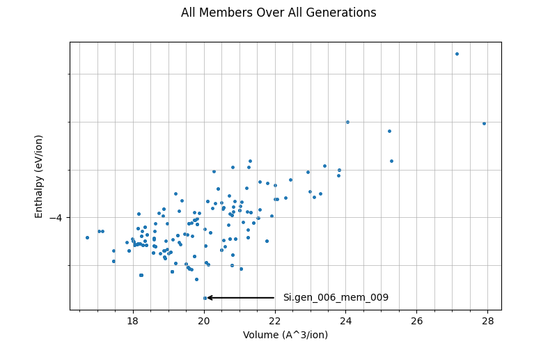
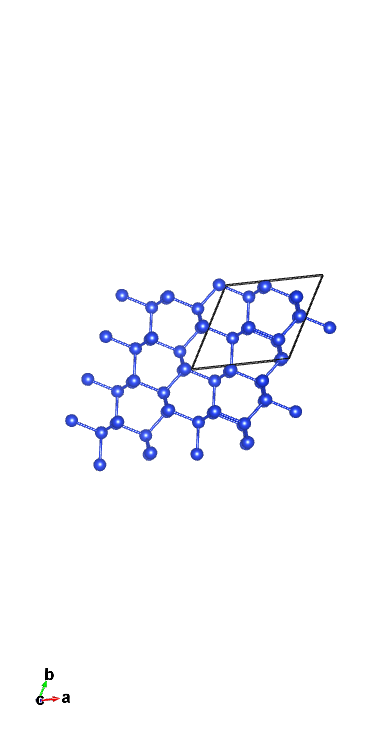

Castep GA for silicon
Let's assume we don't know the ground state Stillinger-Weber silicon structure and set out to discover it using the CASTEP GA!
Input Files
We will use the cell file
Si.cell
%block LATTICE_ABC
ang
3.8 3.8 3.8
90 90 90
%endblock LATTICE_ABC
%block POSITIONS_FRAC
Si 0.203 0.617 0.209
Si 0.844 0.442 0.350
Si 0.964 0.379 0.096
Si 0.762 0.524 0.941
Si 0.544 0.605 0.781
Si 0.238 0.597 0.531
Si 0.728 0.914 0.742
Si 0.209 0.929 0.435
%endblock POSITIONS_FRAC
%BLOCK SPECIES_POT
QC5
%ENDBLOCK SPECIES_POT
symmetry_generate
symmetry_tol : 0.05 ang
The definition of the lattice and positions of the atoms is fairly inconsequential to the result you will get: in the 0th generation it gets effectively randomised. The only thing that matters is the amount of Si atoms defined in the POSITIONS_FRAC block - here it is 8 so future structures will also have 8 atoms. Another thing worth noting is the QC5 potential being used - it is used due to its speed, which is essential considering how many calculations will be done.
For the param file we will use
Si.param
task = genetic algor # Run the GA
ga_pop_size = 12 # Parent population size
ga_max_gens = 12 # Max number of generations to run for
ga_mutate_amp = 1.00 # Mutation amplitude (in Angstrom)
ga_mutate_rate = 0.15 # Probability of mutation to occur
ga_fixed_N = true # Fix number of ions in each member based on input cell
rand_seed = 101213 # Random seed for replicability
opt_strategy = SPEED # Run quick
geom_max_iter = 211 # Can have a large max iter as using pair potentials
# Don't write most output files for each population member
write_checkpoint = NONE
write_bib = FALSE
write_cst_esp = FALSE
write_bands = FALSE
write_cell_structure = TRUE
######################################
# Any extra devel code options #
# & required GA specific devel flags #
######################################
%block devel_code
# Command used to call castep for each population member
# If not given this defaults to castep.serial
CMD: castep.serial :ENDCMD
GA:
PP=T # Using a pair potential
IPM=M # Randomly mutated initial population
CW=24 # Num gens for convergence
NI=F # No niching
FW=0.5 # Fitness weighting
# Asynchronous running options
# Required for asynchronous running, without this all geom opts will be run
# one after another
AS=T # Run geometry optimisations asynchronously
MS=3 # Run 3 geometry optimisations at once
# Random symmetry children
NUM_CHILDREN=12
RSC=F
CORE_RADII_LAMBDA=0.8 # Core radii 0.8 pseudopotenital radii
SCALE_IGNORE_CONV=T # Ignore convergence in fitness calcualtion
:ENDGA
# Use pair potentials in geometry optimisations and perform a final snap to symmetry
GEOM: PP=T SNAP=T :ENDGEOM
# Use the Stillinger-Weber pair potential
PP=T
PP:
SW=T
:ENDPP
%endblock devel_code
It is important to understand what is going on in this file. The line task = genetic algor is what tells is to actually run GA. The GA parameters tell the GA how to run- unlike in the previous tutorial (ADD LINK), all of these values are reasonable (the mutation amplitude and rate shouldn't be far off those values in most cases). As you can see, we will have 12 parents in each generation (meaning 12 cells will be chosen to breed), and it will run for 12 generations. ga_fixed_N is what ensures that there are fixed 8 ions in the cell (the more information is fixed, the faster it'll get a decent result as it'll have fewer things to try).
There are numerous lines that speed up the GA - with how many calculations are being performed, this is essential to be feasible. op_strategy = SPEED and geom_max_iter = 211 help ensure that the geometry optimisations (of which there are 12 per generation - so 144 in total for this first run!) are fast but reasonably accurate. AS=T and MS=3 allow asynchronous parellisation, where 3 population members will have geom-opts performed at the same time.
The devel_code block is a bit more complex. The fact that pair potentials are used are defined in both the GA sub-block and GEOM sub-block, again necessary for speed. The CMD sub-block is there so that geometry optimisations are performed on all members: what happens is cell files are generated (initially randomly and in the 1st generation onwards by breeding + mutation), as well as respective param files that tell them to geometry optimise, for each member, and then they are run.
A very important thing to note are the lines
This is highly atypical and would not be used in most actual calculations: instead, it would look like this
With the general rule that NUM_CHILREN + RSN = ga_pop_size (defined earlier). What that does is, in every generation, it creates 1 child as a random high-symmetry structure (with the other 11, NUM_CHILDREN, being bred). The reason this is not used here is because Silicon is a very simple example: it is likely to simply randomly guess that it's diamond, meaning the actual GA was inconsequential and the result is uninteresting.
Note
Though not a gurantee, using an identical RAND_SEED makes it likely that you'll get identical results to this tutorial, so you can follow along more easily
Running and Output
Now we can run castep GA on Si. You may use
tail -f Si.castep
If you wish to see what's going on in the castep file as it runs (it's explained in more detail in the previous tutorial ADD LINK). Once it is done running, we will use the scripts get_data.sh and plot_results.py - first run
./get_data.sh
to get the output file out.put. Run the python script to see that data visually in all_gens.png. The graph should look like this

Each dot in this graph is a member, showing the spread of enthalpy against their volume per ion. The lowest enthalpy member (in this generation generation 6, member 9) is highlighted - this is is currently considered the most stable structure found.
You can also find the lowest enthalpy structure by running
grep 'child' Si.castep | sort -k10,10n | head -20
This gives the 10 lowest enthalpy members (each one repeats twice - don't worry about that). The output looks a bit like
GA: gen # 6 child # 9 enthalpy = -4.336393E+000 eV/atom un-scaled fitness = 0.880797 conv = T member error = F seed = Si.gen_006_mem_009 vol/ion = 20.0224 A**3/atom
GA: gen # 6 child # 9 enthalpy = -4.336393E+000 eV/atom updated fitness = 0.880797 conv = T member error = F seed = Si.gen_006_mem_009 vol/ion = 20.0224 A**3/atom
GA: gen # 12 child # 8 enthalpy = -4.336381E+000 eV/atom un-scaled fitness = 0.880788 conv = T member error = F seed = Si.gen_012_mem_008 vol/ion = 20.0241 A**3/atom
GA: gen # 12 child # 8 enthalpy = -4.336381E+000 eV/atom updated fitness = 0.452993 conv = T member error = F seed = Si.gen_012_mem_008 vol/ion = 20.0241 A**3/atom
GA: gen # 5 child # 9 enthalpy = -4.336369E+000 eV/atom un-scaled fitness = 0.880797 conv = T member error = F seed = Si.gen_005_mem_009 vol/ion = 20.0230 A**3/atom
GA: gen # 5 child # 9 enthalpy = -4.336369E+000 eV/atom updated fitness = 0.880797 conv = T member error = F seed = Si.gen_005_mem_009 vol/ion = 20.0230 A**3/atom
GA: gen # 11 child # 6 enthalpy = -4.258665E+000 eV/atom un-scaled fitness = 0.828518 conv = T member error = F seed = Si.gen_011_mem_006 vol/ion = 19.7822 A**3/atom
GA: gen # 11 child # 6 enthalpy = -4.258665E+000 eV/atom updated fitness = 0.456619 conv = T member error = F seed = Si.gen_011_mem_006 vol/ion = 19.7822 A**3/atom
GA: gen # 4 child # 10 enthalpy = -4.241488E+000 eV/atom un-scaled fitness = 0.880797 conv = T member error = F seed = Si.gen_004_mem_010 vol/ion = 18.2369 A**3/atom
GA: gen # 4 child # 10 enthalpy = -4.241488E+000 eV/atom updated fitness = 0.880797 conv = T member error = F seed = Si.gen_004_mem_010 vol/ion = 18.2369 A**3/atom
GA: gen # 1 child # 8 enthalpy = -4.240423E+000 eV/atom un-scaled fitness = 0.880797 conv = T member error = F seed = Si.gen_001_mem_008 vol/ion = 18.2175 A**3/atom
GA: gen # 1 child # 8 enthalpy = -4.240423E+000 eV/atom updated fitness = 0.880797 conv = T member error = F seed = Si.gen_001_mem_008 vol/ion = 18.2175 A**3/atom
GA: gen # 9 child # 3 enthalpy = -4.240415E+000 eV/atom un-scaled fitness = 0.835359 conv = T member error = F seed = Si.gen_009_mem_003 vol/ion = 18.2164 A**3/atom
GA: gen # 9 child # 3 enthalpy = -4.240415E+000 eV/atom updated fitness = 0.432991 conv = T member error = F seed = Si.gen_009_mem_003 vol/ion = 18.2164 A**3/atom
GA: gen # 9 child # 5 enthalpy = -4.240388E+000 eV/atom un-scaled fitness = 0.835345 conv = T member error = F seed = Si.gen_009_mem_005 vol/ion = 18.2140 A**3/atom
GA: gen # 9 child # 5 enthalpy = -4.240388E+000 eV/atom updated fitness = 0.432963 conv = T member error = F seed = Si.gen_009_mem_005 vol/ion = 18.2140 A**3/atom
GA: gen # 11 child # 10 enthalpy = -4.225493E+000 eV/atom un-scaled fitness = 0.801207 conv = T member error = F seed = Si.gen_011_mem_010 vol/ion = 19.0956 A**3/atom
GA: gen # 11 child # 10 enthalpy = -4.225493E+000 eV/atom updated fitness = 0.420408 conv = T member error = F seed = Si.gen_011_mem_010 vol/ion = 19.0956 A**3/atom
GA: gen # 1 child # 9 enthalpy = -4.225480E+000 eV/atom un-scaled fitness = 0.865596 conv = T member error = F seed = Si.gen_001_mem_009 vol/ion = 19.0992 A**3/atom
GA: gen # 1 child # 9 enthalpy = -4.225480E+000 eV/atom updated fitness = 0.444351 conv = T member error = F seed = Si.gen_001_mem_009 vol/ion = 19.0992 A**3/atom
Running c2x on it via
c2x --int -e=0.1-0.0001 Si.gen_006_mem_009
tells us its approximation of the structure of it. In my case it gives the output
From this we can immediately tell that the result is imperfect: the actual structure should be diamond (Fd-3m). Do not worry, however, as looking at a 2x2 supercell in VESTA one can see the resemblance to what we'd expect:
This is promising - though it started off by generating random structures, it has already arrived at one resembling diamond.
Let's see if more generations will improve the results. Change the initial param file to have
ga_max_gens = 18
and add the line
continuation = Si.xyz
This tells it to continue to run, up to 18 generations, using the previous results as its history. Running castep GA on Si again will make it run as before.
After it's done running, if you wish to save the previous graph, simply rename it. Then run the bash, and then python, script again to get a new all_gens.png for the continued, longer run. The new image will have more points on the graph, as more members have been examined, and (hopefully) a new minimum enthalpy member. Running the same grep command will give this in the top 4
GA: gen # 16 child # 7 enthalpy = -4.336404E+000 eV/atom un-scaled fitness = 0.880797 conv = T member error = F seed = Si.gen_016_mem_007 vol/ion = 20.0237 A**3/atom
GA: gen # 16 child # 7 enthalpy = -4.336404E+000 eV/atom updated fitness = 0.880797 conv = T member error = F seed = Si.gen_016_mem_007 vol/ion = 20.0237 A**3/atom
GA: gen # 6 child # 9 enthalpy = -4.336393E+000 eV/atom un-scaled fitness = 0.880797 conv = T member error = F seed = Si.gen_006_mem_009 vol/ion = 20.0224 A**3/atom
GA: gen # 6 child # 9 enthalpy = -4.336393E+000 eV/atom updated fitness = 0.880797 conv = T member error = F seed = Si.gen_006_mem_009 vol/ion = 20.0224 A**3/atom
This is rather interesting: even after 6 * 12 = 72 new members have been generated, the original minimum is still the 2nd lowest enthalpy: it certainly is a good structure. However, 16,7 is now considered the best: let's look at how it improved.
Running c2x on it tells me this
According to c2x it is now more similar to diamond (though if you're being very strict with it it, is not - it is still imperfect, though closer). Looking at it on VESTA (again a 2x2 supercell) tells us a similar story
As expected of GA, it has managed to improve the structure through multiple generations. If you wish, you could continue to run it for more generations by keeping the continuation line and increasing ga_max_gens more - in fact, if using a different seed or if your environment processed said seed differently, you may have to - 6 more generations aren't guranteed to find a new lowest enthalpy structure!